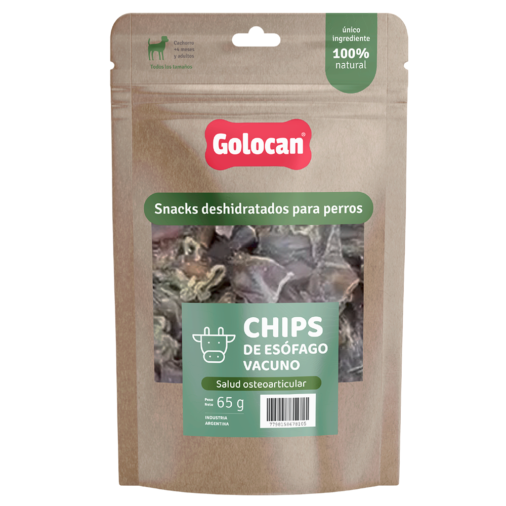

Snack 100% natural y secado a bajas temperaturas de alta palatabilidad. Ideales para complementar la alimentación diaria de forma saludable. Contribuyen a reducir el sarro de los dientes y mantener sus mandíbulas fuertes.

Esófago bovino deshidratado
Este snack está destinado a cachorros mayores de 4 meses y adultos de todas las razas
Pequeños, hasta 5 kg
se recomiendan 40 gramos.
Chicos, de 6 a 10 kg
se recomiendan de 40 a 60 gramos.

Medianos, de 11 a 20 kg
se recomiendan de 60 a 75 gramos.

Grandes, de 21 a 40 kg
se recomiendan de 75 a 85 gramos.
Muy grandes, más de 40 kg
se recomiendan de 85 a 100 gramos.
Son altamente digestibles, están repletas de nutrientes naturales que favorecen la salud de las articulaciones (como la condroitina y la glucosamina) y constituyen una alternativa segura y saludable al cuero crudo.
Higiene dental: Su textura crujiente elimina la placa y el sarro mientras tu perro mastica.
Nutrición: Naturalmente rico en colágeno, cartílago y tejido conectivo, que son fuentes de primera calidad de glucosamina y condroitina. Favorece la salud de articulaciones y huesos.
Uso: Es fácil de digerir al ser un músculo orgánico y no piel, es suave para los estómagos sensibles y se metaboliza fácilmente.
Siempre supervisá a tu perro cuando le ofrezcas un snack para masticar para evitar que trague trozos grandes sin masticar y asegurate de que tenga acceso a abundante agua fresca.
Usalo como un premio o recompensa, no como sustituto de una comida principal.
Almacenar en un lugar fresco y bien ventilado, lejos de la luz solar.
No apto para cachorros menores a 4 meses.
Una forma saludable y natural de premiar, entretener y cuidar la salud de tu peludito.
Ver todos los productos